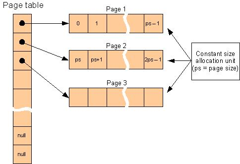
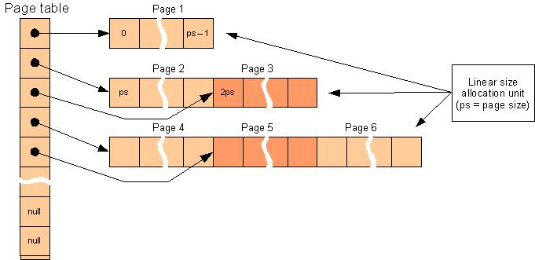
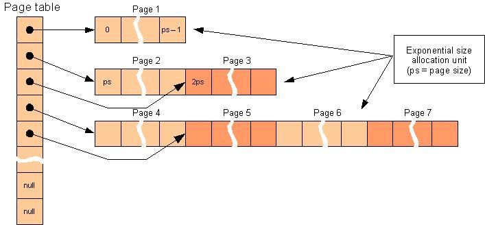

PagedArray Class
Random container using separate memory pages without reallocation.
template <class Type>
class PagedArray : public RandomContainer< Type >
Template parameters
- Type
-
Type of items the array stores.
Members
Constructors
Content management
| Swap |
Swaps content of two arrays.
|
Content query
| Enumerate |
Allows enumeration of the array's content.
|
| Begin |
Returns an iterator referring to the first item in the array.
|
| End |
Returns an iterator referring to the one past last item in the array.
|
Performance tuning
Public Types
Description
PagedArray is a RandomContainer implementation that stores items in separate memory pages
without reallocation. It allocates memory in allocation units which contain one or more
pages depending on the allocation strategy.
It's public methods are non-virtual and are inline if appropriate.
Among random container implementations PagedArray has the following advantages:
- It is not reallocating so inserting new items at the end (pushing) and deleting items
from the end (poping) is fast. When a new item does not fit into the last page then a new
one (ore new ones, depending on the allocation strategy) is allocated. When at least
two pages (or more precisely two allocation units) are empty then they are freed.
- Memory utilization is very good. With constant allocation strategy it wastes at most
two pages. With linear allocation strategy it wastes at most
sqrt (8 * page_count + 1) - 2 pages.
However memory utilization of the exponential allocation strategy is bad and its
characteristics are similar to that of Array's.
- Imposes little storage overhead on items: total cost of an item storage cell is somewhat
more then the physical size of an item because in addition to pages that contain the items
it has a page table that contains pointers to pages.
- It rarely allocates memory and holds little allocation units with linear (in 4 Gb at most
approximately 10000) and exponential (in 4 Gb at most 32) allocation strategies.
However with constant allocation strategy and large number of items it allocates often
and holds relatively large number of allocation units (in this cases single pages).
- It has medium own size: currently 28 bytes.
- If insertions and deletions always take place at the end then references to items
can be stored in long term.
Among random container implementations PagedArray has the following disadvantages:
- Insertion and deletion can be relatively slow because all items above the insertion or
deletion point are moved up or down by invoking assigment operators on items.
- If insertions and deletions can take place at arbitrary indices then references to items
can be stored only until the next modifying operation on the array is invoked.
Items are required to have default and copy constructors and assigment operator.
In addition if they have comparison operators (== and !=) then value dependent
operations (eg. Find, Count, Contains etc.) will be also useable.
The following figure shows the internal layout of the PagedArray using constant allocation strategy:

The following figure shows the internal layout of the PagedArray using linear allocation strategy:

The following figure shows the internal layout of the PagedArray using exponential allocation strategy:

Requirements
Namespace: GS
Header: PagedArray.hpp
See Also
Array | StableArray